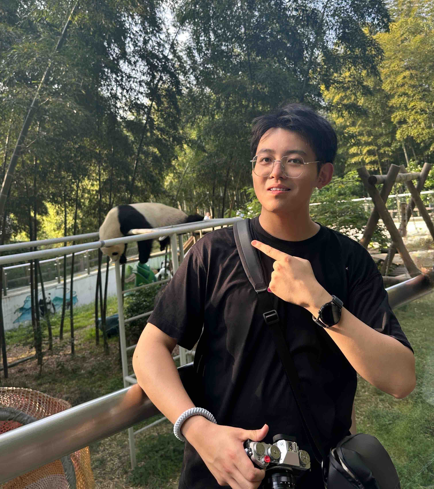

Yu-Yang Qian @ LAMDA, NJU-AI
|  |
钱宇阳
Supervisor: Professor Zhi-Hua Zhou Email: qianyy@lamda.nju.edu.cnLaboratory: Computer Science Building, Xianlin Campus of Nanjing University [ Google Scholar, Github ] |
|

{kind=link}
Supervisor
Professor Zhi-Hua
Zhou
Biography
-
Sep 2016 - Jun 2020 : Receive my B.Sc. degree in School of Information and Communication Engineering, University of Electronic Science and Technology of China.
-
Sep 2020 : Admitted to study for a M.Sc. degree in Nanjing University without entrance examination under the guidance of professor Zhi-Hua Zhou.
-
Sep 2023 - Now : Curretnly I am a Ph.D. student of School of Artificial Intelligence in Nanjing University and a member of LAMDA Group, where I was very fortunate to be advised by Prof. Zhi-Hua Zhou and Prof. Yuan Jiang.
Research Interests
My research interests include Machine Learning and Data Mining. Most recently, I am interested in:
-
Weakly-Supervised Learning in Non-stationary and Open World Environments;
-
Efficient Online Learning/Streaming Learning/Continual Learning;
-
Efficient Learning for Large-Pretrained Models, including efficient Continual Fine-tuning and RLHF for LLMs.
Preprints
-
Provably Efficient Online RLHF with One-Pass Reward Modeling. [arXiv] [code] [bibtex]
Long-Fei Li*, Yu-Yang Qian*, Peng Zhao, and Zhi-Hua Zhou.
Publications
-
Handling New Class in Online Label Shift. [paper] [code] [bibtex]
Yu-Yang Qian, Yong Bai, Zhen-Yu Zhang, Peng Zhao, and Zhi-Hua Zhou.
IEEE Transactions on Knowledge and Data Engineering (TKDE 2025), to appear, 2025.
-
TreeLoRA: Efficient Continual Learning via Layer-Wise LoRAs Guided by a Hierarchical Gradient-Similarity Tree. [paper] [code] [arXiv] [bibtex]
Yu-Yang Qian, Yuan-Ze Xu, Zhen-Yu Zhang, Peng Zhao, and Zhi-Hua Zhou.
In: Proceedings of the 42nd International Conference on Machine Learning (ICML 2025), Vancouver, Canada, 2025.
-
Adapting to Generalized Online Label Shift by Invariant Representation Learning. [paper] [code] [bibtex]
Yu-Yang Qian, Yi-Han Wang, Zhen-Yu Zhang, Yuan Jiang, and Zhi-Hua Zhou.
In: Proceedings of the 31st ACM SIGKDD Conference on Knowledge Discovery and Data Mining (KDD 2025), Toronto, Canada, 2025.
-
Efficient Non-stationary Online Learning by Wavelets with Applications to Online Distribution Shift Adaptation. [paper] [code] [StreamingWavelet Package] [Pip Install] [bibtex]
Yu-Yang Qian, Peng Zhao, Yu-Jie Zhang, Masashi Sugiyama, and Zhi-Hua Zhou.
In: Proceedings of the 41st International Conference on Machine Learning (ICML 2024), Vienna, Austria, 2024.
-
Learning with Asynchronous Labels. [paper] [code] [bibtex]
Yu-Yang Qian, Zhen-Yu Zhang, Peng Zhao, and Zhi-Hua Zhou.
ACM Transactions on Knowledge Discovery from Data (TKDD 2024), 18(8):1-27, 2024.
-
Handling New Class in Online Label Shift. [paper] [code] [bibtex]
Yu-Yang Qian*, Yong Bai*, Zhen-Yu Zhang, Peng Zhao, and Zhi-Hua Zhou.
In: Proceedings of the 23rd IEEE International Conference on Data Mining (ICDM 2023), Shanghai, China, 2023.
-
Adaptive Learning for Weakly Labeled Streams. [paper] [code] [bibtex]
Zhen-Yu Zhang, Yu-Yang Qian, Yu-Jie Zhang, Yuan Jiang, and Zhi-Hua Zhou.
In: Proceedings of the 28th ACM SIGKDD Conference on Knowledge Discovery and Data Mining (KDD 2022), Washington, DC, 2022.
-
Thinking in Frequency: Face Forgery Detection by Mining Frequency-Aware Clues. [paper] [bibtex]
Yu-Yang Qian*, Guojun Yin*, Lu Sheng, Zi-Xuan Chen, and Jing Shao.
In: Proceedings of the 16th European Conference on Computer Vision (ECCV 2020), Virtual, 2020.
Projects & Open-Source Codes
-
üßë‚Äçüç≥ Online RLHF Pipeline ‚Äî Cook your own RLHF recipe! [GitHub]
This repository provides a flexible and modular code framework to Reinforcement Learning from Human Feedback (RLHF). A PyTorch implementation of the paper "Provably Efficient Online RLHF with One-Pass Reward Modeling".
Key Features: You can cook your own Online-RLHF recipe using this repo! Customizable RLHF recipes, modular training components (SFT, RM, PPO, DPO), online learning capabilities, and quickly build up your own RLHF pipeline.
-
üå≥ TreeLoRA ‚Äî Efficient Continual Fine-tuning of LLMs [GitHub]
Propose a hierarchical tree-structured LoRA adapters for efficient continual fine-tuning of large models. A PyTorch implementation of the paper TreeLoRA (ICML'25).
Key Features: Efficiently explores task structure using bandits and optimizes parameters through sparse gradient updates, validated on various sizes of models, up to 3.2× speedup for ViTs and 2.4× speedup for LLMs.
-
üìà Streaming Wavelet Operator [Pip Install] [GitHub]
Sequentially apply wavelet transform to a sequence efficiently in an online manner, instead of recalculation each round. A PyTorch implementation of the paper "Efficient Non-stationary Online Learning by Wavelets with Applications to Online Distribution Shift Adaptation" (ICML'24).
Can be used for: detect environmental changes, efficiently identify changing points, and analyze variations in sequences.
Awards & Honors
-
2024, Ruli Scholarship in Nanjing University
-
2024, achieved an Excellent rating in the Doctoral Qualify Examination (Top 15% of all Ph.D. candidates)
-
2021, Dongliang Scholarship Excellent Award in Nanjing University
-
2021, the First-Class Academic Scholarship in Nanjing University
-
2020, Outstanding Undergraduate Thesis Award
-
2018, Gold Medal, ACM-CCPC (China Collegiate Programming Contest) National Invitational Contest
-
2018, First Prize, the National Mathematical Contest in Modeling
Teaching Assistant
- Advanced Optimization. (With Asst. Prof. Peng Zhao; 2022 Fall)
Academic Service
- Reviewer/Program Committee for Conferences: ICML 2022-2025, NeurIPS 2022-2025, ICLR 2024-2025, KDD 2024-2026, AAAI 2026, AISTATS 2024, UAI 2024.
Correspondence
-
Email: qianyy@lamda.nju.edu.cn
-
Office: Room 912, Computer Science Building, Xianlin Campus of Nanjing University
-
Address: National Key Laboratory for Novel Software Technology, Nanjing University, Xianlin Campus Mailbox 603, 163 Xianlin Avenue, Qixia District, Nanjing 210023, China
(南京市栖霞区仙林大道163号, 南京大学仙林校区603信箱, 软件新技术国家重点实验室, 210023.)